The levels in this codelab suffer from access control issues. Controlling which accounts can interact with a smart contract can be challenging. Code auditing must be done for each contract to ensure that only authorized users can access sensitive functions.
This level implements a PiggyBank that is owned by Charlie. His wallet address is the only one that is supposed to be able to withdraw funds. The web interface can clearly identify that the wallet address we're using is different than Charlie's.
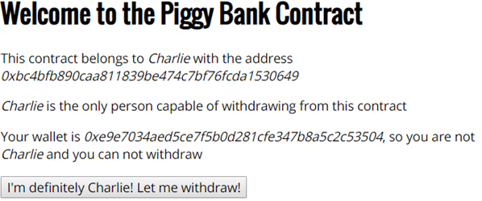
When we try to withdraw money by clicking on the button. The web interface blocks our request with the following popup.
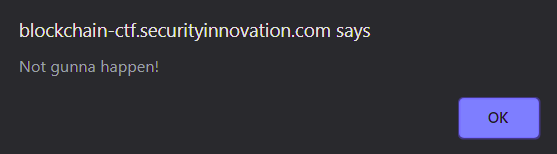
Seems pretty secure! Right? ¯\_(ツ)_/¯
As with other levels in the CTF, we need to make sure that the actual contract itself performs the appropriate access control, not just the web interface. Because one can easily bypass the web interface and invoke contract functions directly, access control must be properly implemented within the contract itself.
The level contract, CharliesPiggyBank, is a subclass of a base PiggyBank contract. The code for the PiggyBank base class is shown below. As the code shows, the contract uses SafeMath to avoid issues with arithmetic overflow and underflow. Its payable constructor sets the owner to msg.sender and adds the amount used to instantiate the contract (msg.value) to the balance of the contract. It also has a payable fallback function allowing anyone to add money to the PiggyBank.
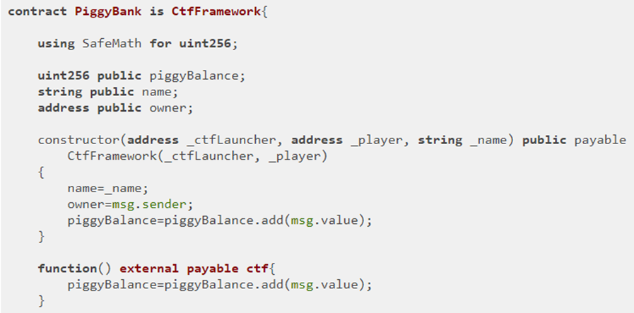
The base class contains the modifier onlyOwner() which ensures that only the owner of the contract as set in the constructor is allowed access to a particular function.
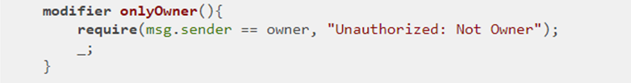
Finally, the contract contains two functions to allow withdrawals. The collectFunds() function is externally callable, but is protected by the onlyOwner modifier to ensure only the owner can collect the funds. This function checks to see that the amount to withdraw is less than the balance, before calling the function withdraw() to update the balance and transfer the ETH to the owner. Note that the withdraw() function is labeled internal so that it can only be invoked by other functions in the contract.
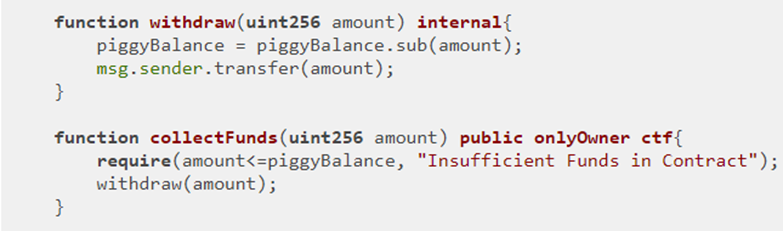
The level contract, CharliesPiggyBank is shown below. It extends the PiggyBank contract with a counter in order to track the number of withdrawals that Charlie makes. It does so by overriding the collectFunds(). In looking at the call, it simply adds 1 to the public storage variable withdrawlCount. But, is there anything missing with the call?
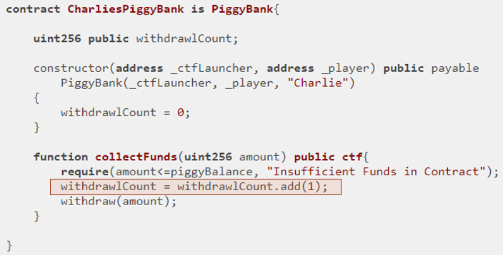
You will be leveraging the omission to pull money out of CharliesPiggyBank without being Charlie.
Use MyCrypto, the contract's address, and its ABI to access the vulnerable contract, bypassing the web interface of the contract.
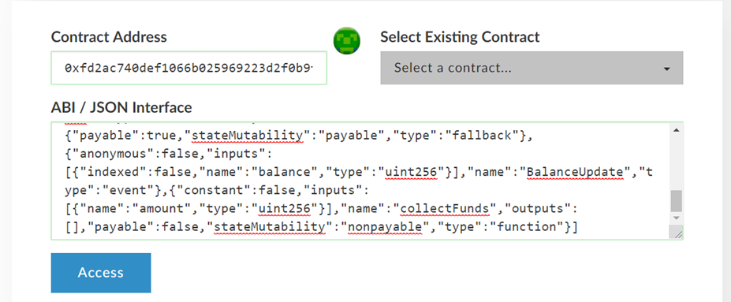
See the various external function calls that the contract supports.
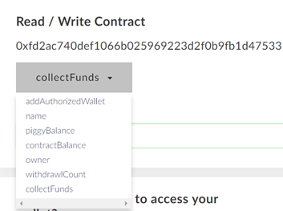
Fill in the number of Wei you would like to take out. Given that 10^10 Wei = 1 ETH, calculate the amount of Wei that the contract holds given that it is instantiated with 0.15 ETH. Consult http://eth-converter.com/extended-converter.html for help.
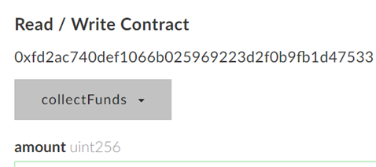
As before,
collectFunds() call in Etherscan. Include this screenshot and the level's screenshot showing a 0 ETH balance. This level implements a bank for depositing and withdrawing ETH. It requires one to sign up for a membership via the web interface so only members can participate.
This one seems way more secure than the previous one. You can tell because it has Secure in its name!
The level contract, MembersBank, is a subclass of a base SimpleBank contract. The code for the SimpleBank base class is shown below. As the code shows, the contract implements a bank for depositing and withdrawing ETH. To do so, it creates a storage variable mapping called balances to track account balances per address. The constructor initializes this mapping with any ETH that the creator of the contract (msg.sender) has sent to it. For this level, the creator is the CTF launcher and the amount of ETH is what you have given out of your wallet to the launcher to play the level (0.4 ETH).
contract SimpleBank is CtfFramework {
mapping(address => uint256) public balances;
constructor(address _ctfLauncher, address _player)
public payable CtfFramework(_ctfLauncher, _player) {
balances[msg.sender] = msg.value;
}The base contract also implements a fallback function to receive deposits and one that allows user's to withdraw ETH from their accounts. The withdraw function requires that the user has a sufficient balance before allowing the withdraw to happen. It then deducts the amount from the user's balance before transferring the amount.
function withdraw(address _user, uint256 _value) public ctf {
require(_value<=balances[_user], "Insufficient Balance");
balances[_user] -= _value;
msg.sender.transfer(_value);
}
function () public payable ctf {
deposit(msg.sender);
}
}The base contract does not restrict deposits so that anyone can send ETH and create an account via the fallback function. To ensure only specific users can store ETH, another contract, MembersBank derives itself as a subclass of SimpleBank, but adds access restrictions to ensure only registered members can join. It does so by creating another storage variable mapping of addresses called members to track the e-mail addresses of those who have registered. It then implements a register() function to allow users to add themselves to the members mapping by supplying their e-mail address (_username) and their wallet address (_user) which it then adds. To ensure only members can access the contract, it defines a modifier isMember() to ensure that only members are allowed. This is used to protect the withdraw function to make sure only members can invoke it. The withdraw function overrides the one in the base contract to apply the modifier, before calling the base contract function via calling super.withdraw().
contract MembersBank is SimpleBank {
mapping(address => string) public members;
function register(address _user, string _username) public ctf {
members[_user] = _username;
}
modifier isMember(address _user){
bytes memory username = bytes(members[_user]);
require(username.length != 0, "Member Must First Register");
_;
}
function withdraw(address _user, uint256 _value) public isMember(_user) ctf {
super.withdraw(_user, _value);
}
} There are no issues with this, is there?
What happens if I register a _username with an extremely large number of characters in it?
What happens if one member decides to issue a withdraw on another member's account?
We finally get to the level contract code, SecureBank. SecureBank is derived from MembersBank, but overrides two functions. The first is the register() function. In the original function, there are no bounds checks on the length of the _username given to the contract. While the web interface could implement bounds checking on the registration function, as we have seen before, such checks must be implemented in the contract to actually ensure enforcement. Without the bounds check, an adversary might be able to send in a large username to cause the contract to consume an inordinate amount of gas to operate.
SecureBank fixes this by placing two require statements to ensure a minimum and maximum length on the _username as shown below:
contract SecureBank is MembersBank {
function register(address _user, string _username) public ctf {
require(bytes(_username).length!=0, "Username Not Enough
Characters");
require(bytes(_username).length<=20, "Username Too Many
Characters");
super.register(_user, _username);
}The second function SecureBank fixes is much more critical. It involves the withdraw() function. In the prior contract, any adversary who is a member can initiate a withdraw on a victim member's account just by knowing the victim's account address. While the adversary can not steal the victim's ETH, the ability to force a withdraw can effectively create a denial-of-service attack on the victim. To fix this, the SecureBank contract protects the withdraw function by ensuring the _user account specified in withdraw is the same as msg.sender. Additionally, limits on the amount allowed in the withdrawal are also implemented. The contract then issues super.withdraw() to invoke the base function in the MembersBank contract which checks for membership, updates the account balance, and performs the transfer of funds.
function withdraw(address _user, uint8 _value) public ctf {
require(msg.sender == _user, "Unauthorized User");
require(_value < 100, "Exceeding Account Limits");
require(_value >= 1, "Does Not Satisfy Minimum Requirement");
super.withdraw(_user, _value * 1 ether);
}
}In looking at the code, the first issue revolves around who can register a _username to a particular _user address. Is the _user guaranteed to be the msg.sender? Unfortunately, all versions of the contract will allow anyone to register a _username to a particular address even though they might not own the address! If the register() function had taken the _user as msg.sender, then only the owner of a particular wallet address would be able to register the wallet address on the contract.
The second issue is much more subtle. For this, we'll need to play the game below...
withdraw() function withdraw(address _user, uint256 _value) public ctf {
require(_value<=balances[_user], "Insufficient Balance");
balances[_user] -= _value;
msg.sender.transfer(_value);
}withdraw()Adds a membership check and calls SimpleBank withdraw()
function withdraw(address _user, uint256 _value) public isMember(_user) ctf {
super.withdraw(_user, _value);
}withdraw()Ensures addresses match and calls MembersBank withdraw()
function withdraw(address _user, uint8 _value) public ctf {
require(msg.sender == _user, "Unauthorized User");
...
super.withdraw(_user, _value * 1 ether);
}When the contract is instantiated, the balances mapping is updated using the address of the launcher contract. As we have seen previously, the MembersBank contract restricts access to withdraw() using isMember(). Because of the first issue with SecureBank, you can easily call register() to create an account for the launcher contract's address. This will allow funds to be withdrawn from the launcher account. To find out the launcher's address, you can copy the contract's address from the CTF site, then locate the transaction that creates that contract from Etherscan. The address that creates the contract also sends the initial ETH. You can also discover the launcher's address by inspecting the contract itself. Because the balances mapping is public, all addresses that have balances in the contract are exposed.
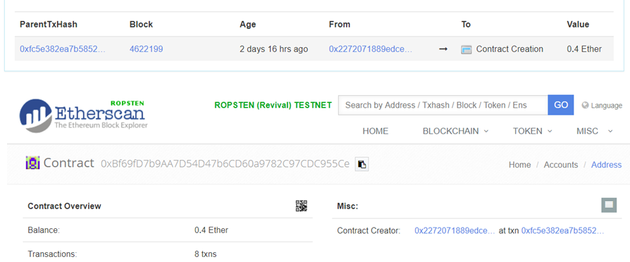
Then, using MyCrypto, access its account balance to show it contains the ETH you are looking to retrieve.
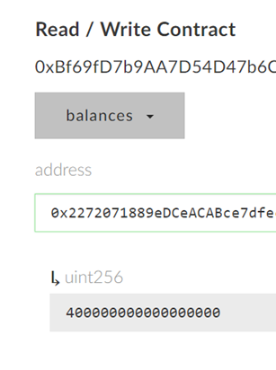
Finally, call the register() function using that address and a username of your choice to create an account for the launcher.
The second issue with the contract is that the function signatures of withdraw() are not identical. Unfortunately, when this happens, you end up with separate withdraw() functions rather than a single one that overrides the others. Within MyCrypto, view the different functions that are accessible. See that multiple withdraw calls are available due to the function signature mismatch. We wish to call MembersBank's withdraw() since it does not check to make sure that msg.sender == _user.
there are multiple instances of withdraw() that you can call.
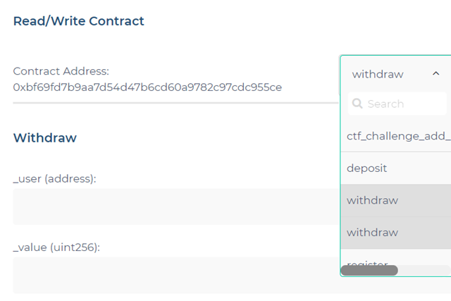
Call the vulnerable version of withdraw() to empty out the contract.
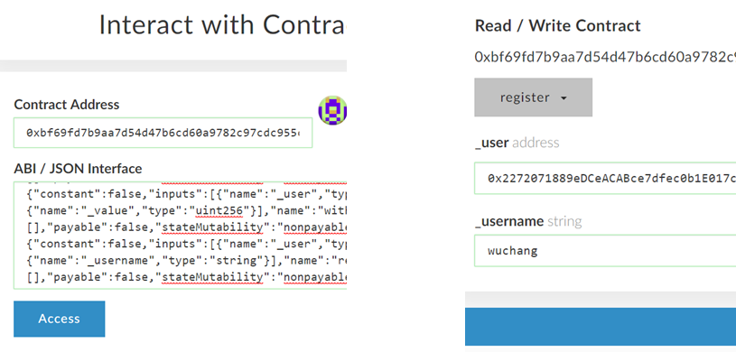
As before,
withdraw() call in Etherscan. Include this screenshot and the level's screenshot showing a 0 ETH balance.You have identified and exploited several contracts that contain vulnerabilities in the way they perform access control. Access control is an extremely important part of any smart contract to get right as a single error can completely wipe out a contract's value.